Tekheads
Project Completion Date: 14th January, 2016
As part of my Visual Design project at Huddersfield University I re-branded Tekheads which is a small Performance Computer Hardware company. This involved creating a brand new logo for them to use across their different applications.
Client Brief
Tekheads is a small company based in Lincoln that currently sells Performance Computer Hardware. They also build custom PC’s. Their clientele mainly comes from online purchases but they do have a customer collection counter at their warehouse. Although at the moment they are solely PC orientated they do feel that the direction of Tekheads does need to change in the next few years, going in the line of consumer tech. The main problem for them in doing this is finding the supplier links and agreements to get the ‘must have’ items.
The main target audience of Tekheads is PC / Gamer Enthusiast ranging from 18 to 25 year olds.
Due to Tekheads not being re-designed for many years I would like to use the style of Modern Design. This will allow the brand to have a new, fresh and contemporary feel to it.
Research into Tekheads
Before starting the project I did some research into Tekheads to gain more knowledge about the company. I looked at their website and Facebook page before emailing the client with questions about their goals, target audience, their current competitors and what direction would they like Tekheads to go in in the next few years.
From this I have found out that Tekheads has been trading for many years, meaning that they will have established a client base for what they sell. Tekheads has 3 main competitors. All of which consist of mainly dark colours with the use of bright colours (normally one bright colour) on specific elements. The final thing I found out was Tekheads would like to move away from selling PC’s, although doing this could result in losing the core area of the business.
Moodboards
Having gathered keywords from the brief and grouping those keywords into 3 categories, Visual, Business and Customers, I decided to expand and create moodboards for the words Modern Design, Fresh and Performance Computer Hardware This is because to me these are the ones that are about the new style and what the business does.
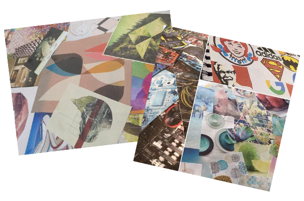
Colour Scheme & Fonts
Choosing the right colour scheme is an important aspect of any logo. I used my moodboards to create the colour scheme. I kept the colours suttle as this is something I found common throughout my moodboards.
The new colour scheme is very similar to the current one which means it isn’t huge change which is something the client doesn’t want. The main difference is that the colours are much lighter and less harsh.
The last stage before designing their new logo was to look into fonts that could be used on the logo. I decided to look into the typography at this stage in the project because I knew typography would be used even if it wasn’t directly on the logo.
I experimented with 5 different fonts and as you will see further down I decided to use the first font ‘Share Tech’ in my Final Logo Design.
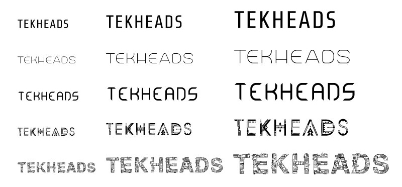
Sketching
The next stage in the project was sketching which was one of my favourite parts of the project. Sketching allowed me to put all my ideas onto paper quickly. From there I took the best 10 and refined them. After getting feedback from the client and my peers I choose my final four sketches that would be made digital.
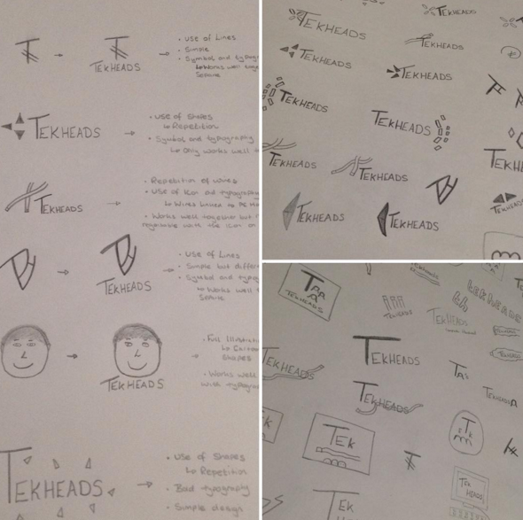
Digital Designs
Making those four sketches digital was the next stage in the project. This was done using Adobe Illustrator which is really good for creating logos and icons because it is a vector software. I was really happy with the outcome of the four digital designs. After consulting with the client and getting feedback from my peers in the critique review session I felt that the second and third design were not as good as the first and forth because the elements next to the text weren’t really relevant.
I found the critique review session really useful as it allowed me to get a lot of feedback from a variety of different people. Using their feedback I was able to see what direction I need to go to make the logo better.
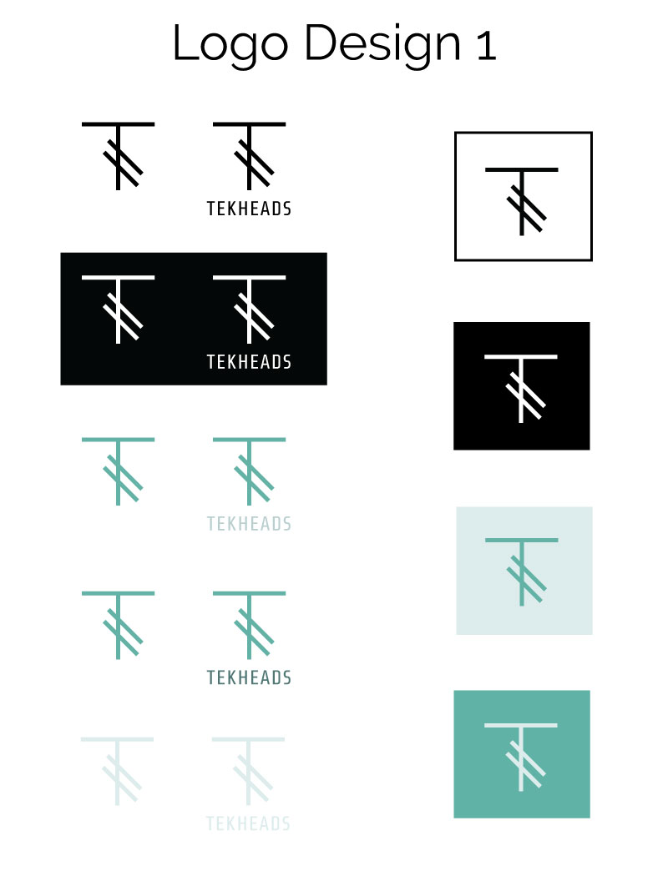
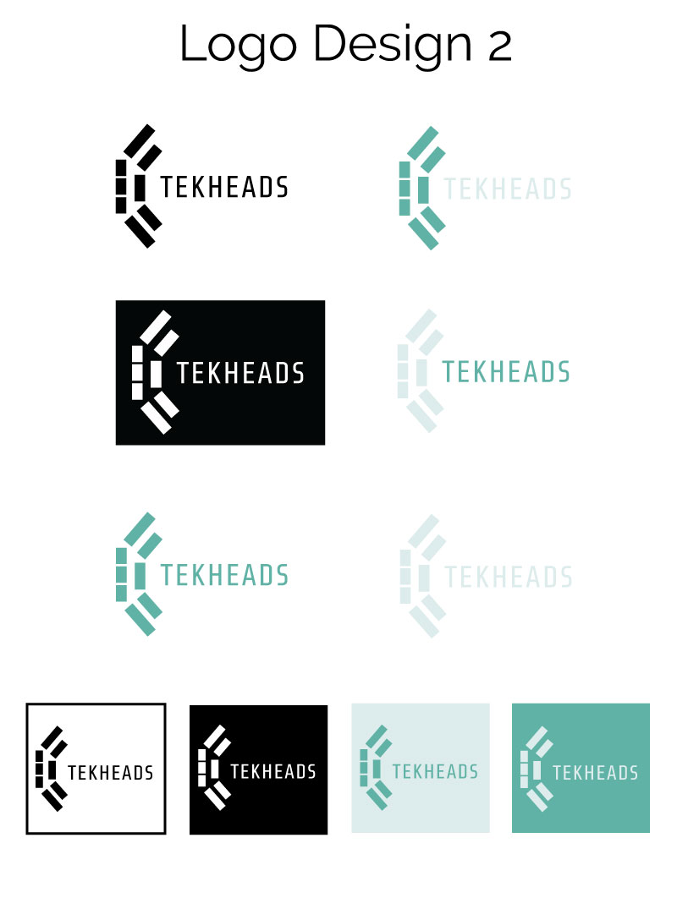
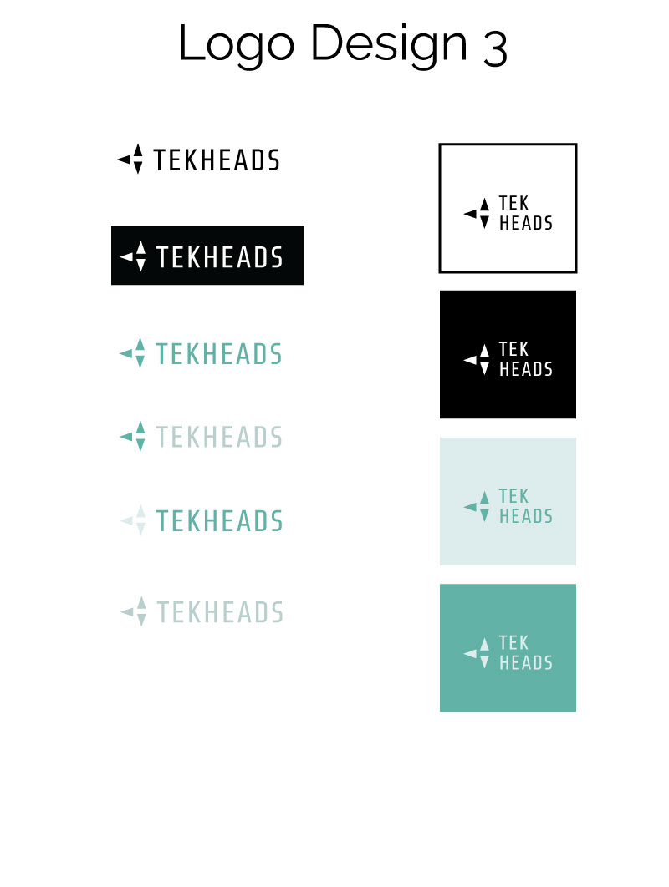
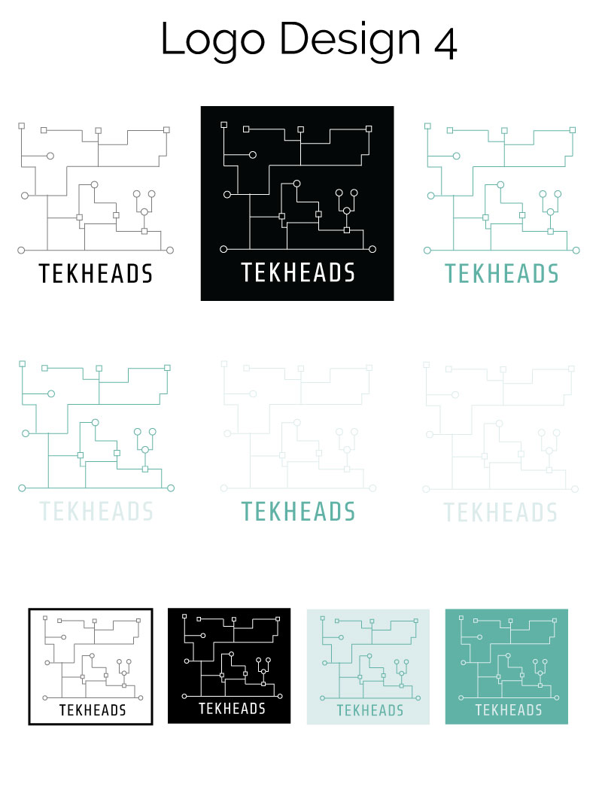
After the critique review session and a meeting with the client I choose on my final design which was digital design 1 as this was simplistic and stood out well.
Final Design Refinements
After choosing my final design I went on to refining it. I spend quite a lot of time refining it and found this part one of the hardest because I really wasn’t sure how to improve the logo in terms of what direction I wanted it to go in. I tried drop shadows, 3D effects and different fonts before deciding on my final logo.
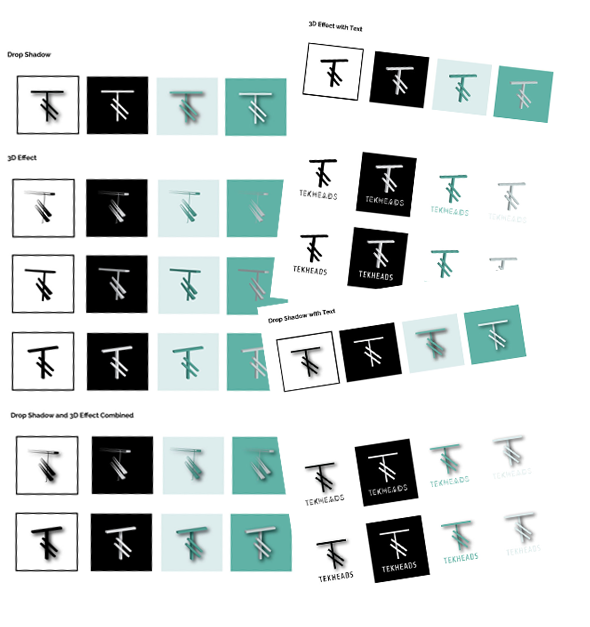
After adding the text and icon together it was time to choose the final design. Both myself and client decided on the logo with the drop shadow because it kept the perfect lines on the icon as well as making the icon part stand out really well.
The Final Logo Design
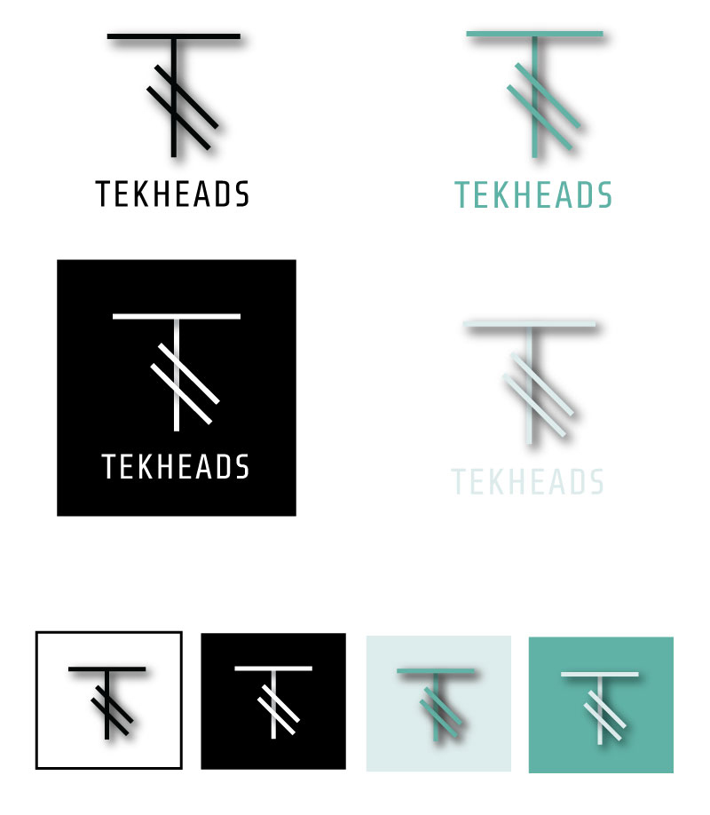
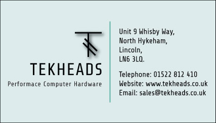
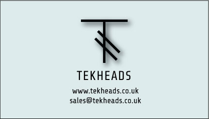
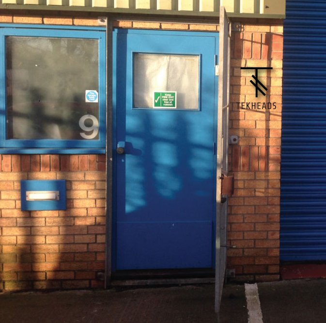
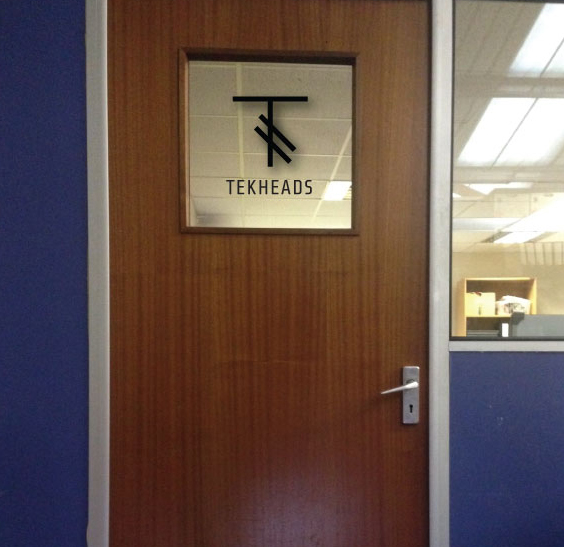
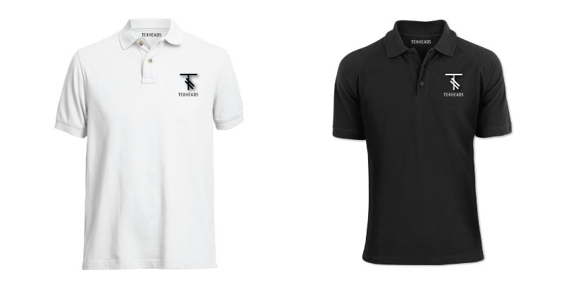
I am really happy with the final logo as it still maintains its simplistic look while using the drop shadow effect to help it stand out. I am pleased that the logo works well at different sizes, positions and colours.
Overall, I have found this project a real learning curve as I have learnt so much about the design process.
I feel that I have created Tekheads a great new logo that will help the business grow and expand. I am really happy that I choose to rebrand Tekheads because they have responded to all my emails quickly and have taken the time out to meet with me in person.